Night City Messenger adds phones, computers, and hacking to your Cyberpunk RED game. Everything looks like the real thing, not like a menu.
Every player character gets an Agent — an in-game phone with messages, contacts, and money transfers. Players can customize how theirs looks.
Scenes have networks. Your phone only picks up networks that exist where you are. Some need a password or a skill check to join. Some areas have no signal at all.
The GM can turn any Item into a data shard (an encrypted file players crack open) or a terminal (a computer players log into). Both can hold all kinds of content: spreadsheets, camera feeds, bank accounts, chat logs, and more.
Players can make their own shards and programs with the Shard Encoder: forged documents, fake chat logs, keyloggers, and more.
Players can steal data from machines, or plant fake data and malware on them. Risky actions use real Cyberpunk RED skill rolls. Failed rolls build up heat that the GM can punish.
The GM controls everything from one Admin Panel.
PacingMost tables add features in this order: messages → contacts → networks → shards → terminals → hacking. Each step works fine without the ones after it. You don't need to learn all of it at once.
Who reads whatGMs: read Part 1 to set up (about 15 minutes), come back to the rest when you want it. Players: Part 2 is all you need, plus Part 5 if your GM lets you make shards.
Contents
01GM setupGM
02Players: your AgentPlayers
03Sending mailGM
04Data shardsGM
05Players make shardsEveryone
06TerminalsGM
07Hacking & consequencesGM
08Three rules to rememberEveryone
09Settings that matterGM
10Your first sessionsGM
NIGHT CITY MESSENGER — GETTING STARTED01
// PART 01 · GMGM setup
You need: Foundry VTT v12 and the Cyberpunk RED Core system. NCM uses the real CPR rules for skill checks, money, roles, and Black ICE.
1 — Find the buttons
After you enable the module, look for the satellite dish icon in the left toolbar. It has these buttons:
Button
Who sees it
What it does
Open Inbox
everyone
opens your phone
Compose Message
everyone
write a message
Contacts
everyone
your contact book
Network Management
GM only
set up networks
Admin Panel
GM only
the GM control center
2 — Open the Admin Panel
This is your control center. It has 9 tabs: Overview, Messages, Contacts, Networks, Shards, Spam, Terminals, Security, Tools. The Overview tab shows your players' characters and recent messages.
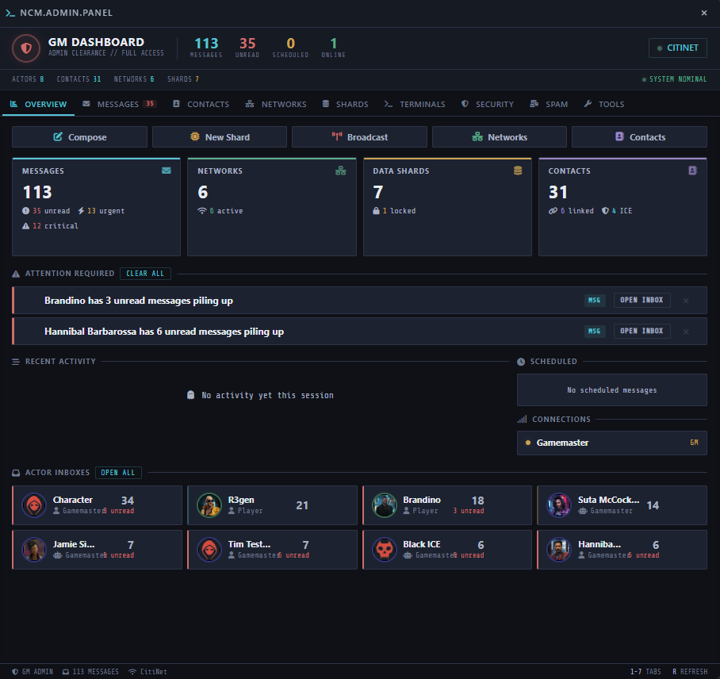
The Admin Panel — Overview tab, with a few registered characters
NIGHT CITY MESSENGER — GETTING STARTED02
3 — Set up networks (5 minutes)
Open Network Management. The module comes with some networks already. Add your own for districts, corporations, or locations. Each network gets a name, a color, and (if you want) security: a password, a skill check, a key item, or a mix.
Then go to the Scenes tab and pick which networks work on which scenes. You can also mark a scene as a dead zone — no signal at all. Changes save automatically.
TipSkip the security stuff at first. Open networks are fine to start with.
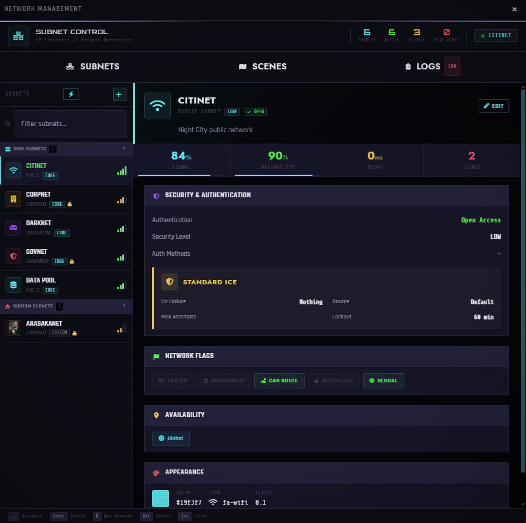
Network Management — networks on the left, the selected network's setup on the right
NIGHT CITY MESSENGER — GETTING STARTED03
4 — Add some contacts (5 minutes)
Go to Admin Panel → Contacts. This is your master list of every NPC that players can message. From here you can:
Import Actor — turn an existing actor into a contact in two clicks. The portrait and email come with it.
Push contacts to players — give an NPC's contact card to one player or the whole party.
Mark an address as send-only — good for system addresses like alerts@arasaka.com. Players get mail from it but can't reply.
TipDon't build the whole city. Two or three NPCs your party actually talks to is plenty for the first night.
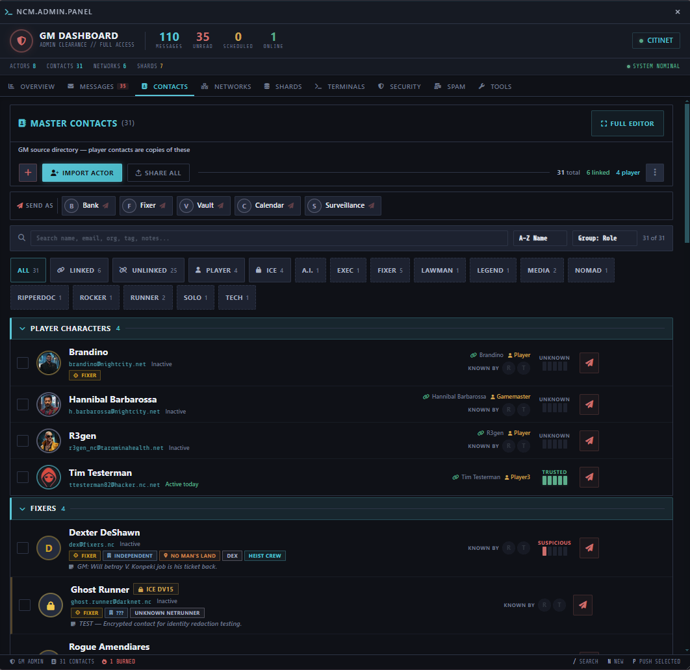
Admin Panel → Contacts tab, with a few NPC contacts and the Import Actor button visible
NIGHT CITY MESSENGER — GETTING STARTED04
5 — Install the macros
Admin Panel → Tools → Import / Reinstall Macros. This adds two macro folders with handy shortcuts for you and your players. Optional, but nice to have.
6 — Pick a clock
In Module Settings, find Time Provider. This controls what clock the module uses for timestamps and countdowns. Your options: real time, world time (works with Simple Calendar), manual (you move it forward yourself), or a fake in-game date. Real time is fine to start. You can change it later.
7 — Bring in the players
That's it. Tell your players to click Open Inbox. The module walks them through the rest.
Make the GM tools comfortable
Admin Panel → Tools → Admin Appearance sets the look and text size for every GM window (dark, light, or high contrast). The inbox, composer, and contacts windows have an eye button in their title bar that switches between your admin look and exactly what players see.
Upgrading from v1.0The module's id changed from cyberpunkred-messenger to night-city-messenger, so Foundry treats it as a new module. Back up your world, disable and uninstall the old one, install the new one, then load the world as GM and click Yes on the migration prompt. Players just log in once. Don't run both versions at the same time.
Starting overAdmin Panel → Tools → Danger Zone → Factory Reset wipes every message, shard, and terminal in the world, and (unless you untick it) resets the module settings. You have to type RESET to confirm. Back up first.
NIGHT CITY MESSENGER — GETTING STARTED05
// PART 02 · PLAYERSPlayers: your Agent
First time
Click Open Inbox (the envelope icon under the satellite dish). The module will ask you to:
Pick your character, if you own more than one.
Pick your email address — a name plus a domain, like v.wraith@nightcity.net. It suggests names based on your character. The GM decides which domains exist.
Done. NPCs and other players can now message you at that address.
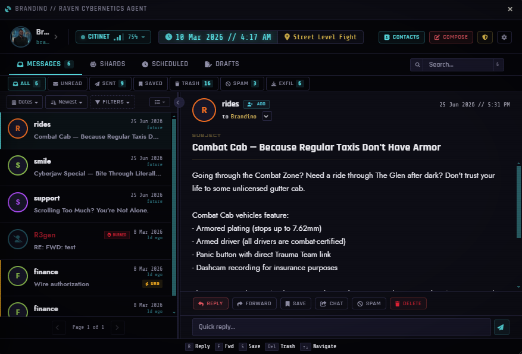
A player's inbox (Message Viewer) with a few messages and the network pill visible
Using your inbox
Folders — Inbox, Sent, Saved, Trash, and Spam. There's a "Mark all read" button at the end of the filter row.
Networks — at the top of the window. You only see networks that reach the scene you're on. A padlock means the network needs a password or a skill check. Some messages only open on certain networks.
Threads — click the Thread button on a message to see the whole conversation in one view.
Money — a message can have eddies attached. Click Claim and the money goes straight to your character sheet. It can only be claimed once.
Self-destructing messages exist. If you get one, read it carefully. It won't be there later.
NIGHT CITY MESSENGER — GETTING STARTED06
Contacts
The Contacts button opens your personal contact book. You can set trust levels, write notes, and mark favorites. When a stranger messages you, use Add to Contacts right from the message. Some contacts are protected by ICE and need a skill check to unlock.
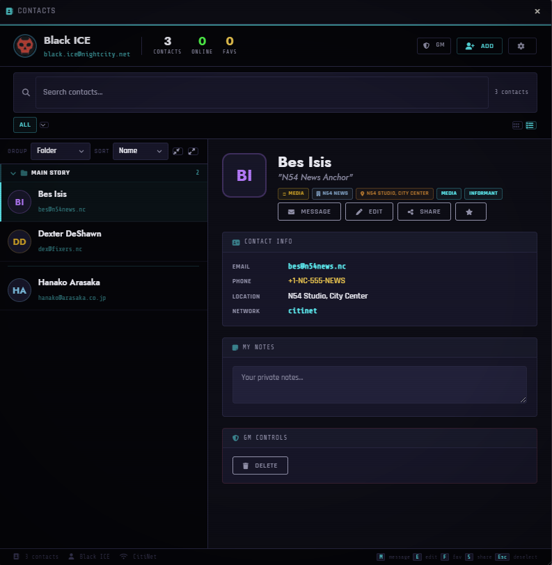
Your contact book — trust levels, notes, and favorites
NIGHT CITY MESSENGER — GETTING STARTED07
Make it yours
Open the Theme Customizer from your inbox. You can change colors, fonts, text size, wallpaper, and effects, and give your Agent a custom name. Only you see your theme.
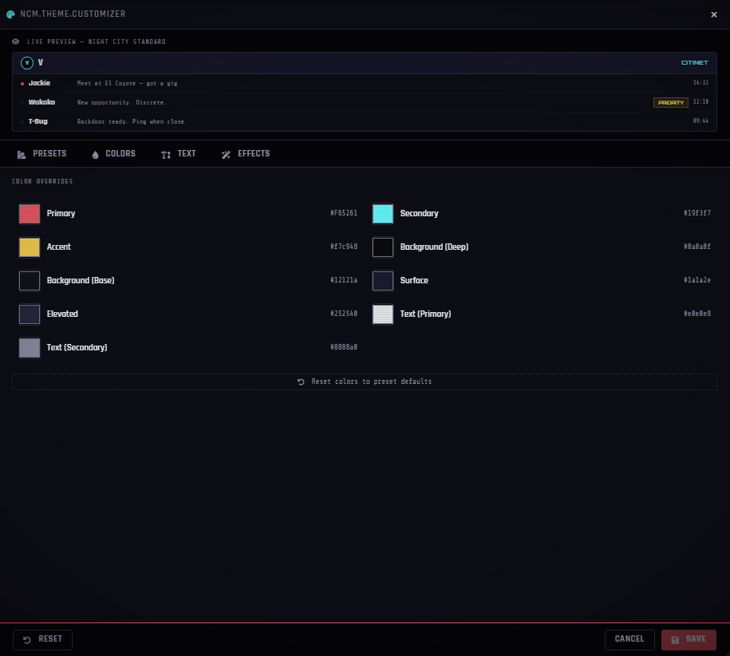
The Theme Customizer — colors, fonts, wallpaper, effects, and your Agent's name
If you own more than one character
ImportantTerminals and shards act as your operator — the character who rolls the dice, pays, and gets paid. If you own several characters, an OPERATOR chip shows up on terminal screens. Check it before you roll. If the wrong character is picked, the wrong character gets the money.
NIGHT CITY MESSENGER — GETTING STARTED08
// PART 03 · GMSending mail
Once messaging works, here's what you can do with it:
Send as anyone. Put any contact in the From field. When players message an NPC, you get a popup, and the mail collects in the NPC Inbox panel (Admin → Messages) where you can reply.
Anonymous send. Turn this on in settings, and the composer gets a checkbox that hides who you are. Players see a glitchy masked avatar instead. They can reply without knowing who they're talking to, and if you allow it, they can roll to trace you. Great for mystery employers.
Self-destruct. Set a message to delete after it's read, or after 1, 6, or 24 hours.
Scheduled messages. Write now, send later. You can also send to the whole party at once.
Spam. The Spam tab has ready-made junk mail you can send to players, and can even send it automatically when they join certain networks. It sounds silly, but a "spam" message can carry anything a real message can. Use that.
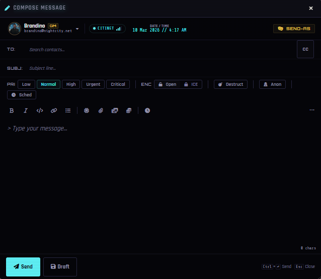
The composer — attach eddies, set self-destruct, schedule, or send anonymously.
NIGHT CITY MESSENGER — GETTING STARTED09
// PART 04 · GMData shards
A data shard is an Item that has been turned into an encrypted file. It's loot that players crack open.
Make one
Right-click any Item and pick Convert to Data Shard. As GM, it converts right away. Right-click again and pick Configure Shard to set the difficulty, the skill needed, lockouts, and Black ICE that attacks players who fail.
Players can make shards too, with the Shard Encoder (see Part 05).
Put stuff inside
Open the shard and add entries. There are 18 kinds of content, and each one looks like the real thing:
Group
Types
Messages & records
message, chat log, records database, calendar, note
Data & money
spreadsheet, bank account, password vault, eddies drop
Media & intel
photo gallery, live camera feed, document, dossier, audio/video log, building plan, location pin
Dangerous
program, malware, system log
Fastest way to learnEvery type has a Load example button. Load the example, look at it, change it.
Almost anything can be locked. Encrypted photos, blacked-out paragraphs, hidden identities — each one takes a skill roll to open, and you can set failed rolls to trigger a trace.
NIGHT CITY MESSENGER — GETTING STARTED10
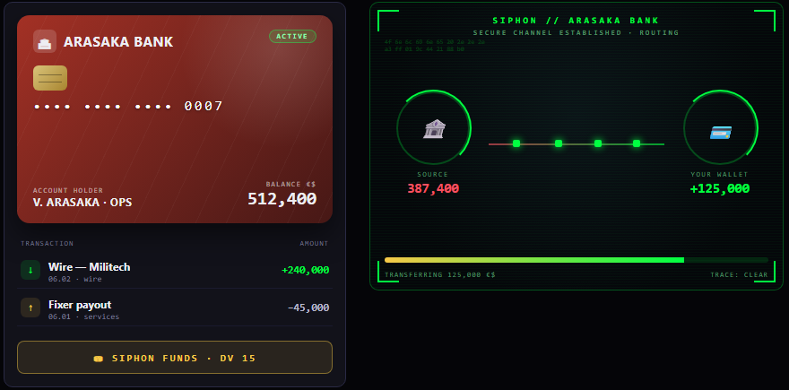
A bank account entry — and the siphon minigame players use to drain it.
A photo gallery: flagged evidence, timestamps, and an encrypted frame that takes a roll to decrypt.
Give it to the players
The shard is a normal Item. Hand it over however you like: drop it as loot, put it on a body, trade it. The player cracks it open with a skill check. There's a whole animated hacking sequence, and lockouts if they keep failing.
Make it look right
Configure Shard → Theme sets the shard's colors, fonts, wallpaper, text size, and contrast, starting from a preset (corporate dossier, black market, medical record, and more). Save a look you like and reuse it on other shards. You can also save a full shard setup to the library; its security settings only come along if you tick the box when saving.
NIGHT CITY MESSENGER — GETTING STARTED11
// PART 05 · EVERYONEPlayers make shards
The Shard Encoder lets players make their own data shards and programs: a forged dossier, a fake chat log, a keylogger to plant on a corp terminal.
Open it
Three ways in: Encode new on the Shards tab of your Agent, right-click an item on your character sheet, or the empty slot in the Program Deck. If you don't see any of them, your GM hasn't allowed your character to make shards yet.
Four steps
Step
What you do
1 · Blank
Pick a chip you own, or buy a blank. Give it a name, a look, and the screen it shows when it starts up.
2 · Content or Program
Write files on it (documents, chat logs, photos, cred drops…) or build a program (scanner, keylogger, backdoor, Black ICE).
3 · Lock (optional)
Add a password, encryption, or a bite-back. How strong you can make it depends on your roll.
4 · Encode
One skill roll decides how it comes out.
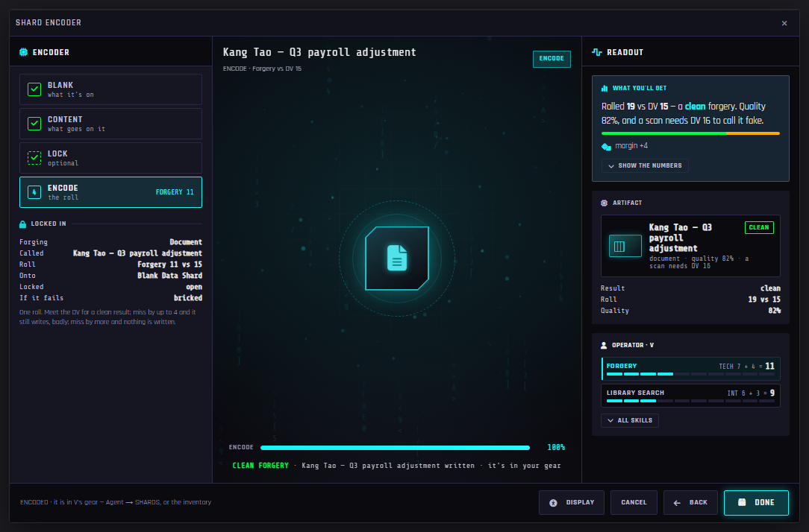
A forged document encoded clean. The readout says what the roll got you, and how hard the fake is to spot.
NIGHT CITY MESSENGER — GETTING STARTED12
How the roll works
Clean — meet the DV. It works, and it's hard to tell it's fake.
Sloppy — miss by a little. It still works, but someone who runs ANALYZE on it can catch the fake.
Rejected — miss by a lot. Nothing is written. A cheap blank is ruined (bricked); a premium one only gets wiped.
Plain messages, notes, and cred drops aren't fakes, so they don't need a roll at all. Putting eddies on a shard moves them out of your wallet; it doesn't create money. More files on one chip make the roll harder.
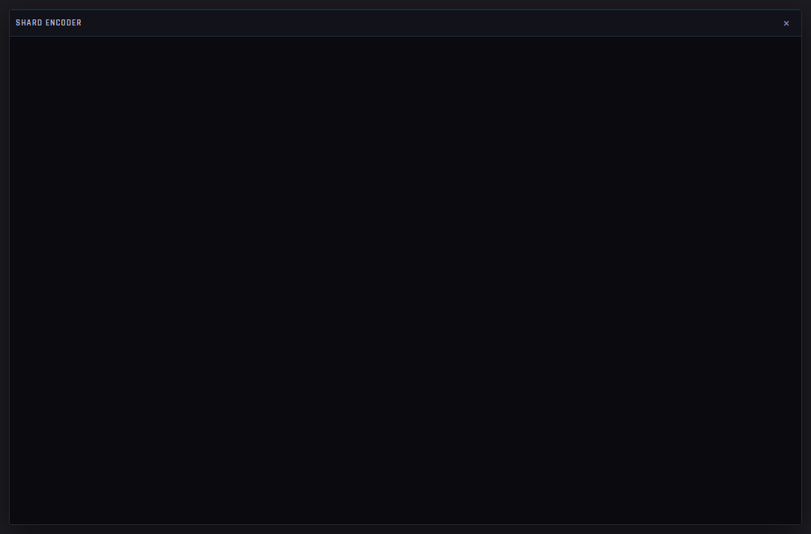
Building a keylogger. Your Interface rank decides which programs you can build; the roll decides how many charges it gets and how well it hides.
Selling it
When the shard is done, you can name a price. Your GM approves, counters, or turns it down, and the price only goes on the item once it's approved.
Hard to read?The Display button at the bottom of the Encoder changes text size, contrast, animation, and spacing for you alone, with presets like Large text and Calm.
NIGHT CITY MESSENGER — GETTING STARTED13
For the GM: Player Authoring
Admin Panel → Shards → Player Authoring controls all of it. Turn it on first; it's off until you do.
Who can make them — anyone, or only characters with a certain role, skill rank, gear, or by name. Characters who don't qualify never see the buttons.
Blanks — price tiers (Scrap, Standard, Premium by default): what each costs, how many files it holds, and what a failed roll does to it.
What they can make — which of the 18 content types are allowed, and the skill and DV for each.
Programs — which programs can be built and what rank they need.
Optional depth — off by default: bonuses for carrying gear like a cyberdeck, game time spent encoding, and a friend helping with the roll.
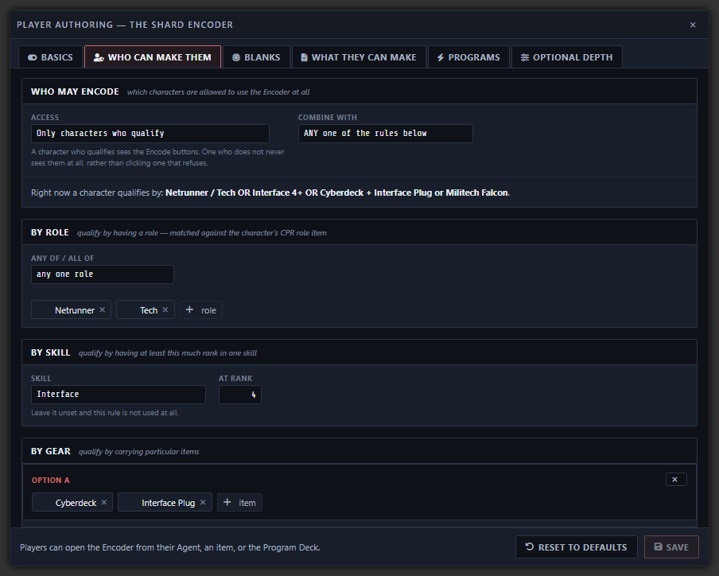
Player Authoring: here, only a Netrunner or Tech, someone with Interface 4+, or someone carrying the right gear can make shards.
Finding player shardsA shard a player made lives on their character, so it isn't in your Items directory. Admin → Shards → Copy Shards to Items puts a live copy of each in a "Player-Made Shards" folder, sorted by character. Player-made shards also show a "Made by" badge in the Shards tab.
NIGHT CITY MESSENGER — GETTING STARTED14
// PART 06 · GMTerminals
A terminal is an Item turned into a computer that players log into. A corp workstation, a ripperdoc's records, a street bulletin board.
Make one
Right-click an Item and pick Convert to Terminal. The setup screen has six tabs:
Identity — name, organization, folder names.
Accounts — the important one. Each account is a login with its own mailbox. Set a username, portrait, admin rights, and security (password, skill check, or key item). Accounts can be hidden — players only find them if they learn the username somewhere else.
Theme — colors, fonts, and wallpaper for this machine. There's a preset library with 12 ready-made looks (Arasaka workstation, NCPD precinct, Trauma Team, street BBS, and more) that set everything up in one click.
Boot & Login — the startup screen, six different login screen styles, a message of the day, and a screensaver. Each terminal can have its own sound effects too.
Network — which network the machine itself is connected to.
Exfil — what players are allowed to do with what they find (see below).
Put it in the world
Drag the terminal Item onto the map. It becomes a pin that players double-click to log in. You can require their token to be standing near it. Or skip the pin and let players open the Item directly.
NIGHT CITY MESSENGER — GETTING STARTED15
What players see
Boot screen, then login, then the machine's mailbox — all in that machine's own look. Machines hold both mail and files (camera feeds, spreadsheets, logs). If an account belongs to an NPC, mail sent to that NPC also shows up on the machine. The paper trail is really there.
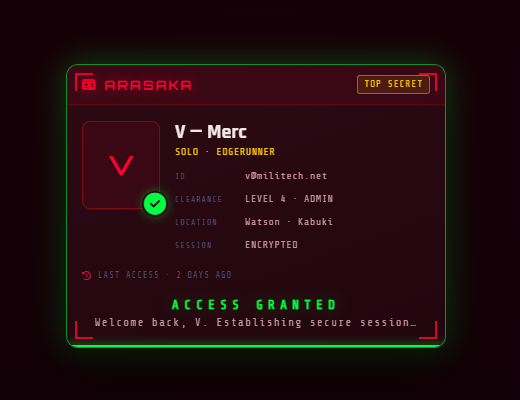
Logging into an Arasaka workstation — the credential badge fills in, then the machine opens its mailbox.
Taking data
The Exfil tab controls what players can do with files they find. Each action can be off, allowed, or allowed-with-a-roll:
Download · Burn to shard · Forward · Leak (posts it to public chat) · Sell (instant eddies) · Wipe (delete it — you can restore it from a recycle bin)
Failing a gated roll triggers a trace. One fun detail: live camera feeds can't be downloaded, but players can save a single frame, loop a camera, or cut it. A looped camera shows a frozen timestamp — which someone might notice.
NIGHT CITY MESSENGER — GETTING STARTED16
// PART 07 · GMHacking and consequences
This is the deep end. Skip it until your table wants it.
Trace & heat
Every risky roll reports to Admin → Security:
Activity Log — a full record of who did what and whether it worked.
Heat — failed rolls build heat on whoever failed them. Heat fades over time. When it gets high, you can hit back: lock them out, attack with Black ICE, or start a countdown the player watches tick down on their screen ("Arasaka is closing in").
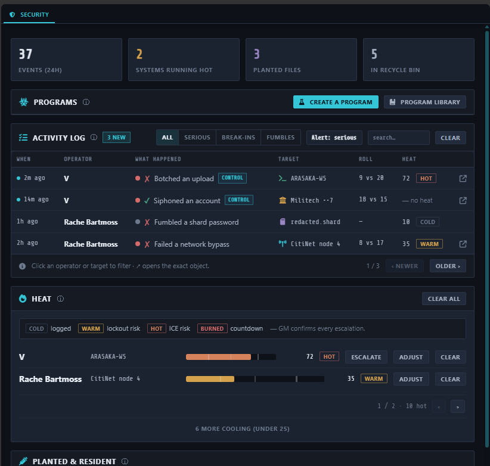
Admin → Security: the activity log, per-operator heat bars, planted files, and the recycle bin — your whole consequence dashboard.
NIGHT CITY MESSENGER — GETTING STARTED17
Planting fake data
Players can also put things ON a machine. They carry a forged file (a fake chat log, a doctored photo) to a terminal and upload it. A forge roll decides how it goes: clean, sloppy (it works, but an inspection will reveal it's fake), or rejected. Planted files go off the next time someone logs in. You choose in settings whether they fire on their own or wait for your go-ahead.
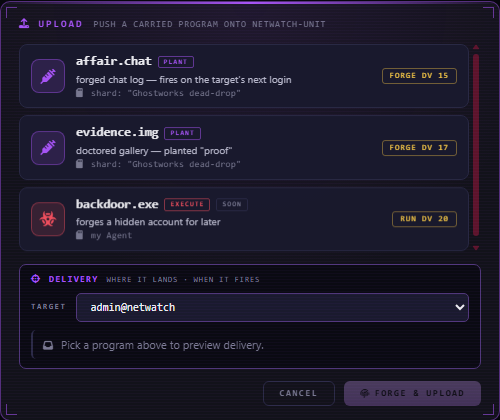
Uploading a forged file from a carried shard onto a terminal.
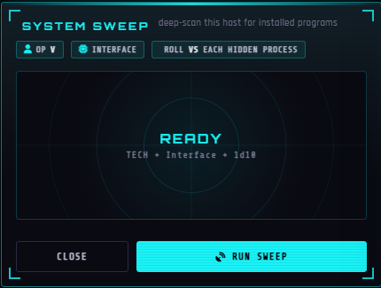
SYSTEM SWEEP — scan a machine for planted programs. It never says what it missed.
Fighting back
Players have tools too. ANALYZE checks whether a file is really what it says it is. SYSTEM SWEEP scans a whole terminal for planted programs — it reveals what the roll is good enough to find, and never says whether it missed anything.
NIGHT CITY MESSENGER — GETTING STARTED18
The Malware Workshop
Admin → Security → Programs opens the Malware Workshop. Build programs with real effects: keyloggers, secret backdoor accounts, ICE traps, logic bombs, file wipers. You can disguise them as harmless files. Give them to players as Items; they carry and use them through the Program Deck.
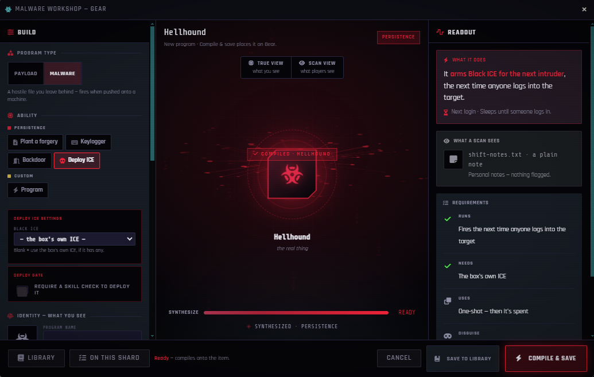
The Malware Workshop — the cover story on top, what the program really does underneath.
NIGHT CITY MESSENGER — GETTING STARTED19
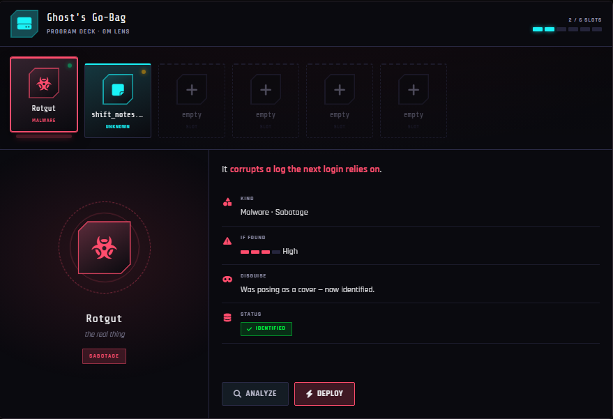
The Program Deck — how players carry and inspect the programs you hand them.
Who can hack at all
Admin → Security → Operator Access lets you limit who can use terminals: by role, by skill level, by gear they need to own, or by naming specific characters.
NIGHT CITY MESSENGER — GETTING STARTED20
How hack rolls get resolved
There's a setting called Netrunning Resolution with three modes. Pick what fits your table:
Auto — the module rolls and resolves everything. Fast. This is the default.
Flagged — same as auto, but you get a card telling you what happened so you can work it into the story.
GM decides — no auto-roll. The player's screen waits while you get a prompt. Run the netrun at the table however you like, then click the result. Both screens can minimize while you play it out.
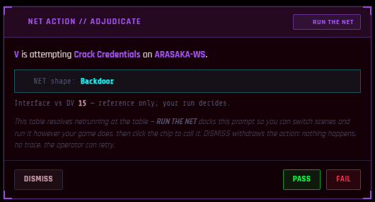
"GM decides" mode: the prompt you get when a player attempts a hack — run the NET at the table, then call it.
NIGHT CITY MESSENGER — GETTING STARTED21
// PART 08 · EVERYONEThree rules to remember
These three things cause almost every "it's broken" report. Tell your players up front:
1
A GM has to be online for player actions to count
When a player claims money, decrypts a file, or uploads something, the change goes through the GM's computer. If no GM is connected, nothing happens. That's on purpose.
2
Check the OPERATOR chip
It picks which character rolls and gets paid. Wrong chip, wrong wallet.
3
"The button does nothing" is usually a setting
Exfil rules, operator access, network range, resolution mode — check the setting before assuming it's a bug. Turning on Debug Mode makes the module explain every decision in the console.
Also good to knowSelf-destructing messages never destroy when a GM reads them (so you can check inboxes safely), and GMs skip most login checks — so if you want to see what players see, log in from a player account.
NIGHT CITY MESSENGER — GETTING STARTED22
// PART 09 · GMSettings that matter
All in Module Settings. The important ones:
Setting
What it does
Time Provider
which clock the module uses
Require Contact Verification
players can only message addresses they know
Smart Conversation Grouping
groups same-subject mail into threads
Anonymous Send
the masked-sender feature
Spam: Unknown Sender
chance for mail from strangers to land in Spam
Netrunning Resolution
auto / flagged / GM decides
Planted Program Firing
fire on their own, or ask you first
Exfil Folder Name
what the players' stolen-files folder is called
Notify GM of NPC Mail
popup when players message NPCs
Auto-register NPC Senders
sending from an NPC actor adds it to your contact directory
Terminal Pins Auto-Show
map pins visible without extra clicks
Debug Mode
the module explains its decisions in the console
NIGHT CITY MESSENGER — GETTING STARTED23
// PART 10 · GMHow to run your first sessions
A pacing that works:
Before session 1: set up two networks and a dead zone, add three contacts, and send each player one message from someone their character knows. It'll be waiting when they first open their phone.
Session 1: players make their addresses, style their phones, and message each other and an NPC. You answer in character. That's enough. Let it breathe.
Session 2: a job offer arrives by mail — maybe anonymously. Payment attached as eddies. The job involves a data shard with three entries: a plain message, a locked photo, a bank account.
Session 3: the job leads to a terminal pinned on the map. Two accounts, one hidden. A camera feed, an incriminating spreadsheet, and a download action that needs a roll. Let someone fail and watch the heat show up on your Security tab.
Later: forged evidence, malware, countdowns, and letting players make their own shards. Add them when the table asks, not before.
NIGHT CITY MESSENGER · for Foundry VTT v12 + Cyberpunk RED Core
github.com/christinophrappuccino/night-city-messenger